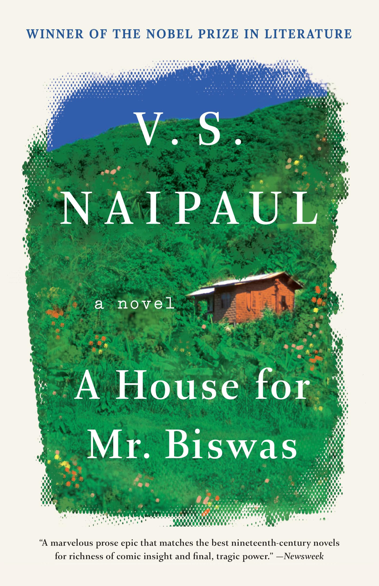

A House for Mr Biswas – A Literary Classic
V.S. Naipaul’s novel A House for Mr Biswas is a compelling and humorous exploration of one man's struggle for independence. Set in colonial Trinidad, the novel captures the themes of identity, ambition, and self-worth.
Mr. Biswas, the protagonist, dreams of owning a house as a way to establish his identity in a world that often denies him autonomy. Naipaul’s sharp wit and deep character development make this novel a timeless read.
With its unique narrative style and cultural depth, A House for Mr Biswas remains one of the greatest novels of modern literature.